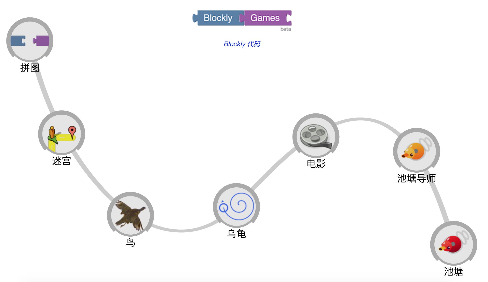

精选课程
Blockly Games
实验简介
Blockly Games是谷歌的一个开源项目，是一系列教授编程的教育游戏的合集。它专为没有计算机编程经验的青少年设计，旨在帮助孩子们实现自我教学和自定进度的学习，鼓励明天的程序员！在这些游戏结束时，玩家就可以开始使用传统的编程语言进行相关的学习了。

Blockly Games是谷歌的一个开源项目，是一系列教授编程的教育游戏的合集。它专为没有计算机编程经验的青少年设计，旨在帮助孩子们实现自我教学和自定进度的学习，鼓励明天的程序员！在这些游戏结束时，玩家就可以开始使用传统的编程语言进行相关的学习了。
